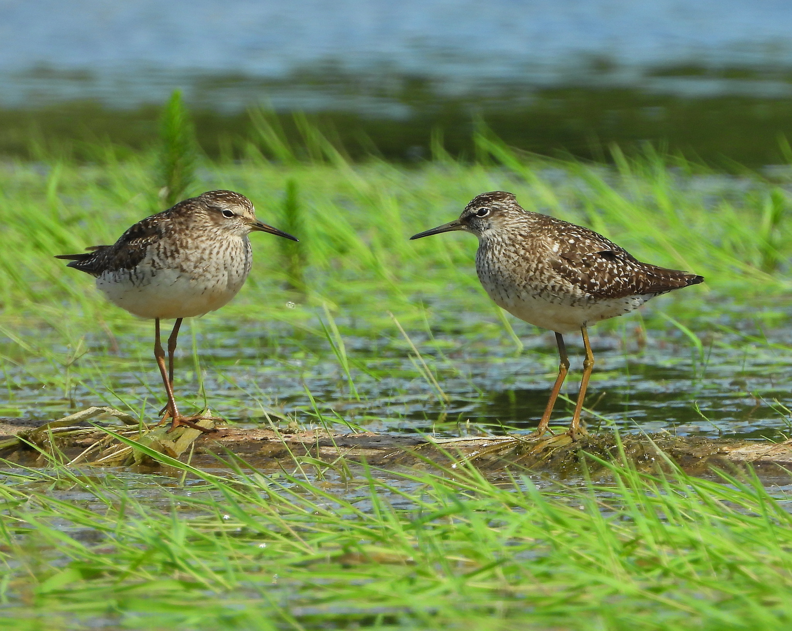

Tringa glareola — le migrateur des mares et prairies inondées
Identité et nom
Le Chevalier sylvain, Tringa glareola, appartient aux Scolopacidae, dans l’ordre des Charadriiformes, selon AviList 2026. Les références arabes koweïtiennes emploient « taytawa al-ghayt ». Son nom n’en fait pas un habitant de la forêt sèche : ses milieux nordiques de reproduction sont humides, et les migrateurs ou hivernants recherchent eaux peu profondes et bordures de marais. Distinguer les saisons explique sa présence possible dans un champ inondé d’un pays arabe. Le guide libanais de 2026 emploie le nom arabe dourayjat al-ghab.
Reconnaissance
Ce limicole élancé possède un bec fin presque droit, des pattes jaunâtres à verdâtres et un sourcil clair dépassant l’œil. Le dessus brun est ponctué de clair ; le dessous est blanc, avec une poitrine striée. Les jeunes présentent souvent des taches dorsales chamois plus régulières, tandis que l’adulte hivernal peut paraître plus gris et moins contrasté. Les sexes ont un plumage semblable : leur attribution photographique exige d’autres preuves. En vol, le croupion blanc est net, sans longue barre alaire blanche.
Espèces proches
Le Chevalier culblanc, Tringa ochropus, oppose davantage dessus sombre et dessous clair ; ses pattes sont relativement plus courtes et le sourcil dépasse moins l’œil. Son dessous d’aile est sombre, contrairement à celui, plus clair, du sylvain. Le Chevalier guignette, Actitis hypoleucos, montre en vol une barre alaire blanche bien visible et une autre silhouette. Il faut combiner sourcil, proportions, croupion et dessous d’aile, plutôt que la couleur des pattes modifiée par la lumière ou la vase. L’identification ne justifie pas un envol provoqué : attendre un mouvement naturel ou conserver le doute est préférable.
Milieux, alimentation et reproduction
Il préfère les eaux douces peu profondes bordées de végétation : mares, marais et champs inondés plutôt que plages marines exposées. Il prélève insectes, larves et autres invertébrés, notamment vers et mollusques, à la surface ou dans l’eau peu profonde. Solitaire ou en petits groupes, il utilise les haltes pour refaire ses réserves. Il niche dans les zones humides du nord eurasiatique proches d’un couvert arboré, généralement au sol. Les poussins duveteux se déplacent après l’éclosion et ont besoin d’un milieu humide sûr jusqu’au développement du vol.
Que signifie une observation en novembre ?
Le guide libanais de 2026 décrit un passage commun sur les côtes, les îles et les zones humides, sans hivernage régulier. La liste de 2020 situe le passage automnal de fin juillet à début novembre : début novembre peut donc en marquer la fin. La liste officielle koweïtienne le donne commun au passage mais rare en hiver ; la base omanaise le décrit abondant dans les deux saisons. Des suivis hivernaux documentent sa présence au Maroc et en Libye, y compris à l’intérieur des terres, sans démontrer une abondance comparable entre pays. Une observation hivernale n’établit ni résidence permanente ni reproduction.
Protéger les petites haltes
Son statut mondial de Préoccupation mineure n’annule pas les effets du drainage, de la pollution et de la disparition des lisières de marais. Une petite mare sûre peut constituer une halte précieuse en milieu aride : sa surface ne mesure pas seule son importance. Éviter les approches interrompant l’alimentation et conserver la végétation des berges sont utiles. Son régime d’invertébrés participe au réseau alimentaire, sans prouver automatiquement une lutte contre un ravageur précis ni garantir la qualité de l’eau.
Références
AviList Core Team — AviList v2026, 20 October 2026.
British Trust for Ornithology — BirdFacts: Wood Sandpiper; RSPB — Wood Sandpiper.
Naturalis Biodiversity Center — Birds of Europe: Tringa glareola.
Bird Count India — Identifying waders, 2017.
Ramadan-Jaradi et al. — Updated checklist of the birds of Lebanon, Sandgrouse 42, 2020.
Kuwait Ornithological Rarities Committee — Kuwait Bird List; Kuwait Birds — Arabic checklist.
Birds of Oman — national species database.
Waders wintering in Morocco, Wader Study Group Bulletin 96, 2001; Results of the seventh winter waterbird census in Libya, January–February 2011.
Ramadan-Jaradi & Itani — Birds of Lebanon: A Photographic Guide to 409 Species, second edition, UNDP, June 2026.
Photo : Лариса Артемьева — CC0-1.0.